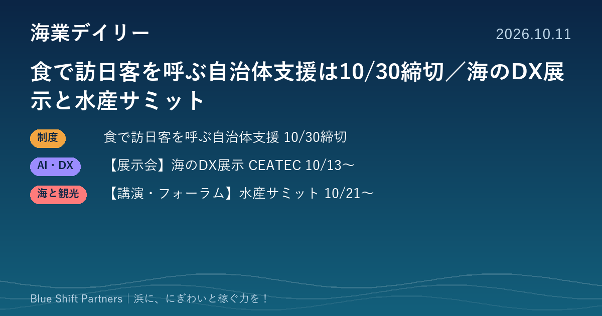

2026.10.11
食で訪日客を呼ぶ自治体支援は10/30締切／海のDX展示と水産サミット

今朝は、農林水産省が食文化を軸に訪日客を呼び込む自治体を支援する「インバウンド拡大チーム」の第2期募集をお伝えします。あわせて、幕張メッセのCEATEC 2026に設けられる海洋デジタル社会パビリオンと、東京・竹芝で開かれるサステナブルシーフード・サミットの2つの催しを紹介します。
農林水産省「インバウンド拡大チーム」が支援先の自治体を募集中、第2期は10月30日締切
農林水産省は、食文化を軸にした地域づくりで訪日外国人の消費を伸ばすため「インバウンド拡大チーム」を結成し、支援する地方公共団体を募集しています。対象は、世界に向けて発信力を持つ食に特化した地域づくりを目指す地方公共団体です。第2期の募集期間は9月24日から10月30日までで、応募は募集要領と応募フォーマットに沿って、Eメールまたは郵送で外食・食文化課（SAVOR JAPAN担当）に提出します。書類審査とヒアリングで支援先が選ばれます。
ここがポイント：漁港の朝どれの魚や浜の食文化は、訪日客を呼ぶ強い素材です。海業に取り組む市町村は、浜の食を核にした地域づくりの構想を固めて応募を検討する価値があります。
出典：農林水産省「食文化の海外展開・インバウンド拡大に取り組む外食事業者及び地方公共団体を募集・支援します」（2026-07-31）
【展示会】CEATEC 2026に「海洋デジタル社会パビリオン」、漁場の見える化や養殖AIなど14社・団体が出展
電子情報技術産業協会（JEITA）が主催するデジタル技術の総合展「CEATEC 2026」が、10月13日から16日まで幕張メッセ（千葉市美浜区）で開かれます。会場内の「海洋デジタル社会パビリオン」では、14の企業・団体がAIやIoTで海の課題に取り組む展示を行い、漁場の水温などをスマートフォンで確認できる観測システム、水産物のトレーサビリティ、養殖向けのAI、自動で航行して給餌する養殖向けの船などが紹介されます。入場は無料ですが、来場者は全員事前登録が必要です。
ここがポイント：漁業・養殖の人手不足や販路の課題に効く技術を、一度にまとめて見て話を聞ける機会です。千葉県内の開催なので、首都圏の漁協や水産事業者が情報収集に立ち寄りやすいのも利点です。
出典：CEATEC 2026 公式サイト「海洋デジタル社会パビリオン」（主催：一般社団法人電子情報技術産業協会）（2026-09-01）
【講演・フォーラム】サステナブルシーフード・サミット2026、10月21日から東京・竹芝で開催（参加無料）
持続可能な水産物をテーマにした国際会議「サステナブルシーフード・サミット2026（TSSS2026）」が、10月21日から23日まで東京ポートシティ竹芝のポートホール（東京都港区）で開かれます。主催は株式会社シーフードレガシーと日経BPで、水産庁が後援しています。小規模漁業と養殖、電子モニタリングやトレーサビリティ、サプライチェーンの人権・労働などを扱うほか、第7回日本サステナブルシーフード賞の表彰も行われます。参加は無料（事前登録制）で、全セッションに日英の同時通訳が付きます。
ここがポイント：資源管理や認証、トレーサビリティは、浜の魚を高く売るための条件になりつつあります。漁協・水産加工・飲食の事業者が、国内外の流通や小売の考え方を直接聞ける場です。
出典：The Sustainable Seafood Summit 2026 公式サイト（主催：シーフードレガシー、日経BP）（2026-10-11）
浜の魚は、食べてもらう場所と売り方を変えると価値が上がります。訪日客を呼ぶ食の地域づくり、DXでの省力化、持続可能性の証明は、どれも「同じ魚をより高く、より少ない手間で売る」ための道具です。今月の展示会やサミットで、自分の浜に合う道具を探してみてはいかがでしょうか。